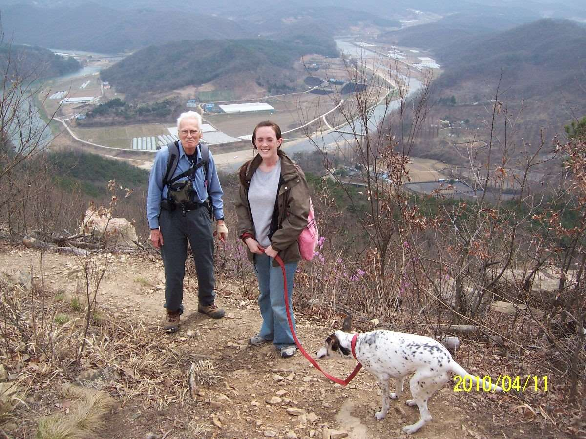
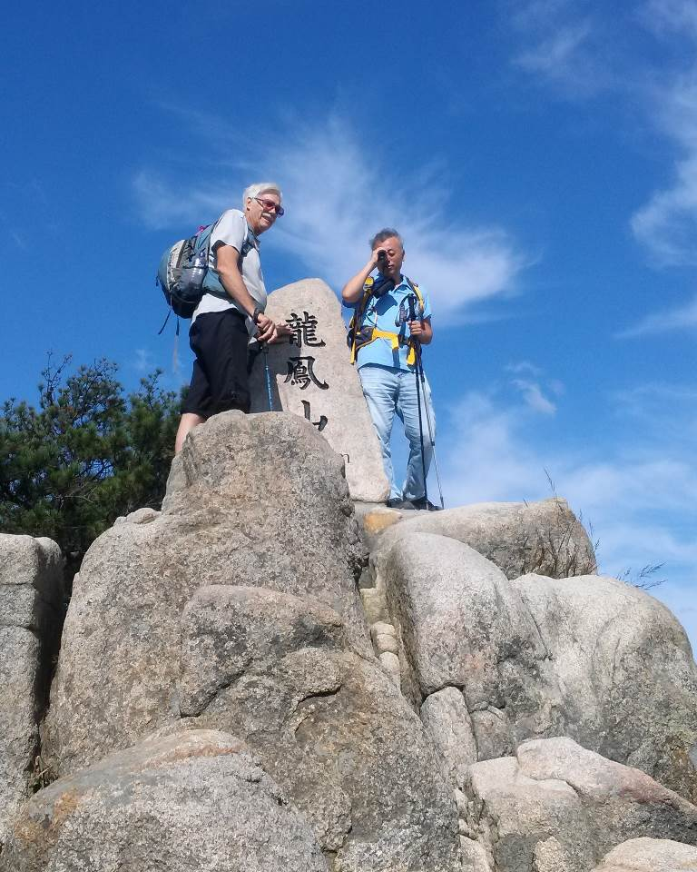
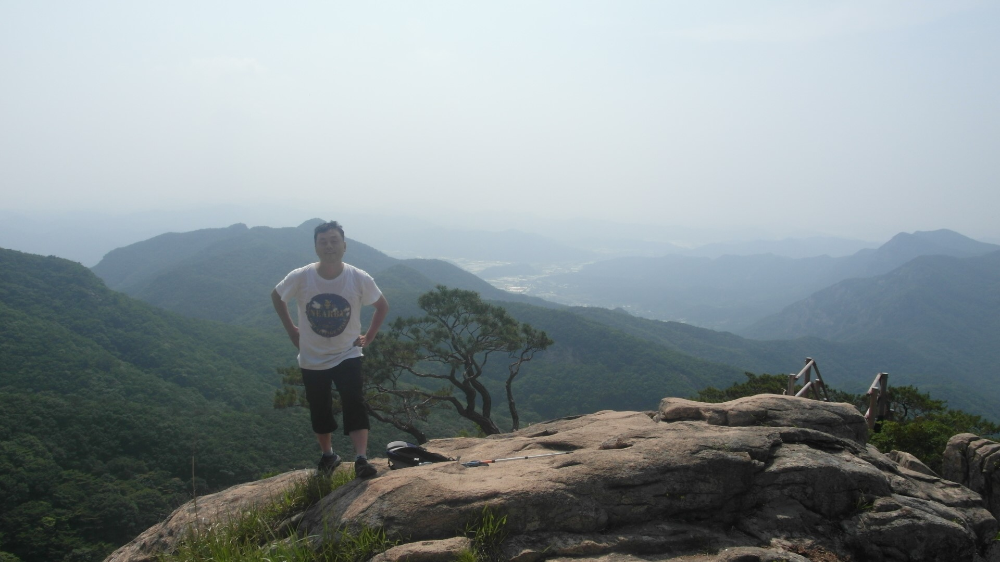
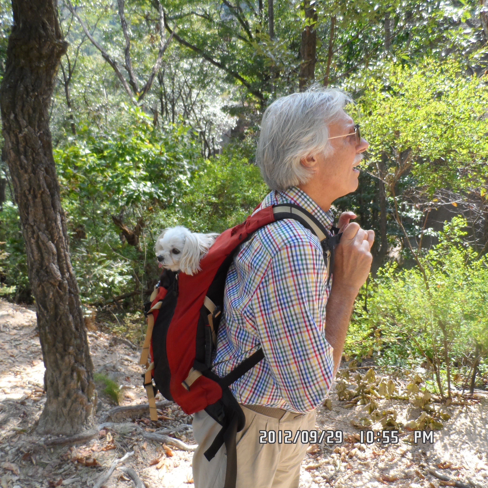

Dr Alan

To our best recollection as a group, the Daejeon Hikers (aka Taejonhikers) started as an informal group
led by Juli Sherer, an English teacher at KAIST from the USA in the late 1990s. She enjoyed hiking and
found that she could more effectively teach her students English while out walking in the hills and
mountains around Daejeon rather than in a classroom.
One of her Korean students, Chang-Hoon Kim (김창훈), soon became the person who led most of the hikes since
he had the most experience and knowledge of the trails in the area. Later, Some Germans, on assignment
at a German factory near Daejeon, became part of the group. A few of the Germans also took part in
leading the hikes after they learned where the trails were. Two of them were Peter Froelich and
Christopher Eitel.
This picture shows Alan and Amy, both from U.S.A.

Our other hiking members included ex-pat foreigners from many countries and our hiking occasionally
included bicycle rides around Daejeon. Some the hikes had ~20 people but most were low key with as few
two people. Alan England (USA) began leading hikes after the Germans were rotated back to Germany and
the experienced Korean hikers also left.
Later, George Furst (USA) and Korean Jong-moo Lee (이종무) took over as leaders from 2012 to the present.
During the years ~2002 through 2011 there were three romances among the hikers that ended with
marriages: (1) Jeonja (Korean) and Michael (German), (2) Amy (American) and Fouad (Pakistani), and (3)
Michael (French) and JinYoung (Korean).
This picture shows current group leaders JongMoo and George.
By Alan England
Jong-Moo Lee (이종무)

I have enjoyed hiking in Korea since my early twenties. When I was a student at KAIST, I liked to hike
because I liked the feeling of being in the mountains and it was good exercise. I met Alan England
around 2007 and decided to join his group the Daejeon hikers. For several years I was one of many
participants of the Daejeon hikers while Alan would lead the hikes. Unfortunately Alan left Korea in
2012 and asked George and I to keep the Daejeon hikers group active. Since then I have planned,
announced and guided the hikes due to my extensive knowledge of the mountain ranges and trails around
Daejeon. Sometimes my wife complains about my absence from home to lead hikes but I am trying to keep
the Daejeon hikers alive until another leader such as Alan appears and can take my place.
George Furst

I have lived in Korea since 2003 with my lovely Korean wife in the same home that she was born in here
in Daejeon. I received a PHD degree in Geology from Penn State U which explains my interest in many of
the interesting geographical features of the Korean landscapes I encounter while hiking or canoeing. I
was a professor at NamSeoul for 3 years and later a professor at the prestigious KAIST in Daejeon until
my retirement in 2015. In addition to hiking and canoeing. I joined Daejeon hikers in 2007 about the
same time that Jong Moo joined as well. In addition to hiking and canoeing I also enjoy caving and
photography, hobbies which complement the hiking and canoeing, and which have allowed me to document the
nature in a country that strives to find a happy medium between development and conservation. George
with his dog “Bibi”.